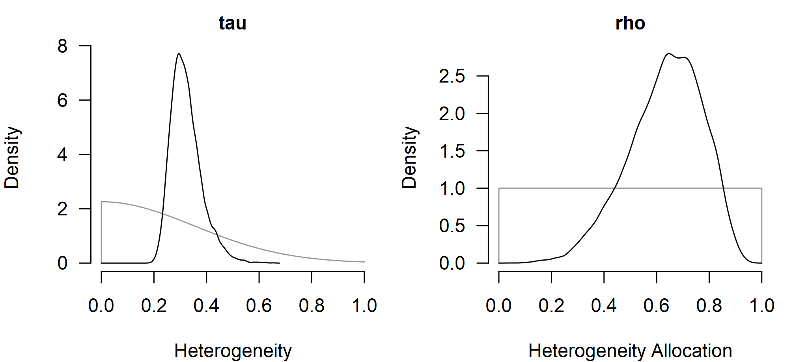

Multilevel Meta-Analysis
František Bartoš
28th of April 2026
Source:vignettes/10-metafor-parity-multilevel.Rmd
10-metafor-parity-multilevel.RmdThis vignette illustrates how to use the RoBMA R package
(Bartoš & Maier,
2020) with multilevel meta-analytic data. We walk through the
school-calendar dataset from Konstantopoulos (2011), showing the
brma() call with the cluster argument
alongside its metafor::rma.mv() counterpart (Viechtbauer,
2010).
All brma() calls keep the default prior distributions;
see the Prior
Distributions vignette for the prior definitions and
customization options. For the non-multilevel workflow showing more
features (also applicable to the multilevel models) see the Bayesian
Meta-Analysis vignette.
The RoBMA R package currently supports the simple
multilevel structure shown here, with one cluster grouping above the
estimate level (parameterized by total heterogeneity
and cluster-level allocation
).
Broader support for multivariate models and more complex random-effects
structures is planned for a future release.
Multilevel Random-Effects Model
The school-calendar dataset from the metadat package
contains 56 standardized mean differences nested in 11 school districts.
Effect sizes yi and sampling variances vi are
already provided, so no escalc() step is needed.
data("dat.konstantopoulos2011", package = "metadat")
dat <- dat.konstantopoulos2011
head(dat)
#>
#> district school study year yi vi
#> 1 11 1 1 1976 -0.180 0.118
#> 2 11 2 2 1976 -0.220 0.118
#> 3 11 3 3 1976 0.230 0.144
#> 4 11 4 4 1976 -0.300 0.144
#> 5 12 1 5 1989 0.130 0.014
#> 6 12 2 6 1989 -0.260 0.014metafor::rma.mv() fits a multilevel random-effects model
with the compound-symmetric structure
random = ~ school | district, parameterized by the total
heterogeneity
and the within-district correlation
.
fit1_metafor <- metafor::rma.mv(yi, vi, random = ~ school | district, data = dat)
fit1_metafor
#>
#> Multivariate Meta-Analysis Model (k = 56; method: REML)
#>
#> Variance Components:
#>
#> outer factor: district (nlvls = 11)
#> inner factor: school (nlvls = 11)
#>
#> estim sqrt fixed
#> tau^2 0.0978 0.3127 no
#> rho 0.6653 no
#>
#> Test for Heterogeneity:
#> Q(df = 55) = 578.8640, p-val < .0001
#>
#> Model Results:
#>
#> estimate se zval pval ci.lb ci.ub
#> 0.1847 0.0846 2.1845 0.0289 0.0190 0.3504 *
#>
#> ---
#> Signif. codes: 0 '***' 0.001 '**' 0.01 '*' 0.05 '.' 0.1 ' ' 1The matching Bayesian fit replaces the random = ...
argument with cluster = district. brma()
parameterizes the multilevel model in the same compound-symmetric form:
a total heterogeneity
and a cluster-level allocation
where
and
.
measure = "SMD" selects the default prior distributions for
standardized mean differences.
fit1_brma <- brma(
yi = yi, vi = vi, measure = "SMD",
cluster = district,
data = dat, seed = 1
)summary() reports posterior means, credible intervals,
and (suppressed here) MCMC convergence diagnostics for mu,
tau, and rho.
summary(fit1_brma, include_mcmc_diagnostics = FALSE)
#>
#> Bayesian Multilevel Random-Effects Model (k = 56, clusters = 11)
#>
#> Estimates
#> Mean SD 0.025 0.5 0.975
#> mu 0.183 0.089 0.009 0.182 0.365
#> tau 0.323 0.058 0.233 0.314 0.461
#> rho 0.634 0.140 0.329 0.647 0.863The posterior mean for the pooled effect tracks the REML estimate
from the metafor package, with comparable cluster-level
allocation rho and total heterogeneity
tau.
Heterogeneity: and
metafor::confint() reports profile-likelihood confidence
intervals for tau^2, tau, and
rho.
confint(fit1_metafor)
#>
#> estimate ci.lb ci.ub
#> tau^2 0.0978 0.0528 0.2398
#> tau 0.3127 0.2298 0.4897
#>
#> estimate ci.lb ci.ub
#> rho 0.6653 0.3282 0.8855summary_heterogeneity() is the Bayesian counterpart,
reporting posterior summaries of the same quantities along with the
partitioned within- and between-cluster components.
summary_heterogeneity(fit1_brma)
#>
#> Heterogeneity Estimates:
#> Mean Median 0.025 0.975
#> tau 0.323 0.314 0.233 0.461
#> rho 0.634 0.647 0.329 0.863
#> tau [within] 0.187 0.185 0.132 0.255
#> tau [between] 0.258 0.248 0.150 0.417
#> tau2 0.108 0.099 0.054 0.213
#> tau2 [within] 0.036 0.034 0.017 0.065
#> tau2 [between] 0.071 0.062 0.022 0.174
#> I2 95.094 95.238 91.673 97.727
#> I2 [within] 34.673 33.498 13.262 62.913
#> I2 [between] 60.421 61.434 30.803 83.757
#> H2 22.745 21.000 12.010 43.998plot() visualizes the posterior, and
prior = TRUE overlays the prior distribution so the shift
from prior to posterior is visible. Side-by-side panels for
tau and rho show the bulk of the posterior
moving away from the weakly informative defaults.
par(mfrow = c(1, 2), mar = c(4, 4, 2, 1), cex.axis = 0.8, cex.lab = 0.8, cex.main = 0.75)
plot(fit1_brma, parameter = "tau", prior = TRUE, main = "tau", xlim = c(0, 1))
plot(fit1_brma, parameter = "rho", prior = TRUE, main = "rho", xlim = c(0, 1))
The tau posterior concentrates around 0.3 with credible
interval comparable to the profile-likelihood bounds, while the
rho posterior favors a moderate-to-high cluster-level
allocation, broadly consistent with the REML point estimate of 0.67.
Other Inference Helpers
All inference helpers available for any other brma() fit
work the same way for the multilevel fit specified via
cluster. This includes meta-regression and location-scale
models, model comparison, and fit diagnostics. See the Bayesian
Meta-Analysis vignette for the full walkthrough; the only thing
that changes here is the addition of
cluster = district.